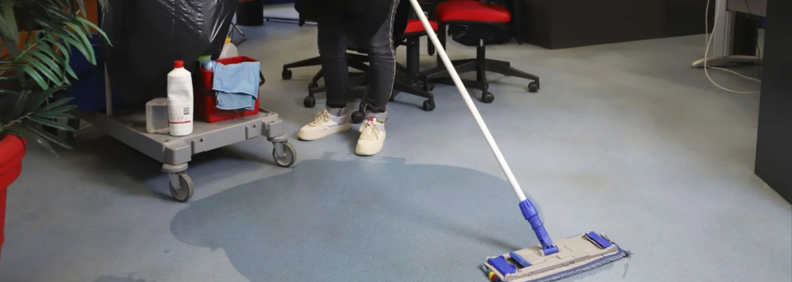

- Définition : entreprise spécialisée en nettoyage professionnel (bureaux, commerces, particuliers)
- Équivalent suisse : "entreprise de nettoyage" est le terme le plus courant
- Prestations : entretien régulier, fin de bail, fin de chantier, vitres, désinfection
- Bénéfice principal : matériel pro + équipe formée + produits adaptés
- Critère essentiel : assurance RC Pro, devis fixe écrit, garantie de résultat
Qu'est-ce qu'une agence de propreté exactement
Le terme "agence de propreté" est plus utilisé en France qu'en Suisse, mais il désigne le même type d'acteur que les entreprises de nettoyage locales : une structure professionnelle qui propose des prestations de nettoyage à des clients particuliers ou professionnels.
Ce qui distingue une agence de propreté d'un service de nettoyage informel :
- Une structure légale enregistrée (numéro IDE en Suisse)
- Une assurance RC professionnelle couvrant les dommages éventuels
- Du personnel formé et déclaré
- Du matériel professionnel (aspirateurs HEPA, monobrosses, produits adaptés)
- Des prestations contractualisées avec devis et facturation
C'est cette structuration qui sépare une vraie agence de propreté d'un prestataire occasionnel ou non déclaré.
Un nettoyage régulier de vos bureaux, sans contrainte
Équipe attitrée · Prix fixe garanti · Devis gratuit
Voir le service régulier →Les prestations proposées par une agence de propreté
Une agence de propreté complète couvre généralement plusieurs types d'interventions, adaptables selon les besoins.
Pour les entreprises (B2B)
| Prestation | Fréquence courante |
|---|---|
| Nettoyage régulier de bureaux | 1 à 5 fois par semaine |
| Entretien de commerces | Quotidien à hebdomadaire |
| Nettoyage de cabinets médicaux | Quotidien avec protocole |
| Nettoyage de vitres pro | Mensuel à trimestriel |
| Désinfection renforcée | Périodique ou sur demande |
Pour les particuliers (B2C)
| Prestation | Quand y faire appel |
|---|---|
| Nettoyage de fin de bail | Avant état des lieux de sortie |
| Nettoyage de fin de chantier | Après travaux ou rénovation |
| Nettoyage en profondeur | Une fois par an (printemps) |
| Nettoyage de vitres | Saisonnier ou ponctuel |
| Débarras + nettoyage | Décès, vente, déménagement |
La différence entre agence de propreté et femme de ménage indépendante
C'est une question fréquente. Les deux options ont leur intérêt selon le contexte.
| Critère | Agence de propreté | Femme de ménage indépendante |
|---|---|---|
| Statut légal | Société enregistrée (IDE) | Statut variable (déclarée ou non) |
| Assurance RC Pro | Toujours incluse | Souvent absente |
| Continuité du service | Remplacement garanti | Difficile en cas d'absence |
| Matériel et produits | Fournis et professionnels | À fournir par le client |
| Prestations spécialisées | Vitres, désinfection, fin de bail | Limitées au ménage courant |
| Prix | Plus élevé | Souvent moins cher |
| Idéal pour | Pro, fin de bail, prestations techniques | Entretien courant léger |
Une femme de ménage indépendante convient pour un entretien régulier basique. Une agence de propreté devient indispensable dès qu'il faut un matériel spécifique, une assurance, ou un enjeu (caution de fin de bail, hygiène professionnelle).

Comment bien choisir son agence de propreté
Trois critères font la différence entre une agence sérieuse et une structure improvisée.
1. La transparence administrative et juridique
Vérifications de base à exiger :
- Numéro IDE (CHE-xxx.xxx.xxx) au registre du commerce suisse
- Assurance RC professionnelle avec nom de l'assureur (AXA, La Mobilière, etc.)
- Personnel déclaré avec contrats légaux
- TVA mentionnée sur les devis et factures
L'absence d'un seul de ces éléments doit faire reconsidérer le choix.
2. La qualité du devis et du contrat
Un bon devis n'est jamais vague. Il doit contenir :
- Un prix fixe (pas une fourchette "à partir de")
- Le détail des prestations pièce par pièce ou poste par poste
- La fréquence des interventions et leur durée
- Les conditions de résiliation (pour un contrat régulier)
- Une garantie de résultat pour les prestations à enjeu (fin de bail notamment)
3. Les avis et la réputation locale
Cherchez l'agence sur Google Maps, Local.ch et les plateformes d'avis. Critères de fiabilité :
- Note moyenne supérieure à 4,5/5
- Volume d'avis significatif (plusieurs dizaines minimum)
- Avis récents (moins de 12 mois)
- Réponses de l'entreprise aux avis négatifs
- Pas de site web ni d'adresse physique vérifiable
- Devis donné par téléphone sans visite ni photos
- Pression pour signer immédiatement
- Prix anormalement bas (en dessous du marché de 30% ou plus)
Combien coûte une agence de propreté en Suisse
Les tarifs varient selon les prestations et le type de client.
| Type de prestation | Fourchette indicative |
|---|---|
| Tarif horaire (intervention ponctuelle) | 35 – 60 CHF/heure |
| Forfait mensuel (bureaux) | Selon surface et fréquence |
| Nettoyage de fin de bail (4.5 pièces) | 700 – 1'100 CHF |
| Nettoyage de vitres (maison) | 200 – 450 CHF |
| Nettoyage fin de chantier | 5 – 9 CHF/m² |
Pourquoi privilégier une agence locale
Choisir une agence de propreté locale plutôt qu'un grand groupe national présente plusieurs avantages concrets.
Réactivité et disponibilité
Une structure locale peut intervenir rapidement en cas d'urgence ou de besoin imprévu. La distance permet aussi des retours gratuits en cas de remarque post-prestation (notamment pour les fins de bail), ce qu'un grand groupe ne propose presque jamais.
Relation humaine et continuité
Avec une équipe locale, vous avez un interlocuteur identifié, parfois le dirigeant lui-même. La continuité du service est meilleure : la même équipe revient régulièrement et connaît vos locaux ou votre logement.
Connaissance des standards locaux
Pour un nettoyage de fin de bail, une agence locale connaît les régies de la région, leurs exigences et leurs habitudes de contrôle. C'est un avantage souvent décisif pour récupérer sa caution.
Soutien à l'économie locale
Faire appel à une entreprise familiale locale, c'est aussi soutenir le tissu économique de votre région. Les emplois créés restent locaux, les impôts sont payés localement, et la relation reste humaine.
FAQ – Agence de propreté
Quelle est la différence entre une agence de propreté et une entreprise de nettoyage ?
Aucune dans la pratique. "Agence de propreté" est le terme plus utilisé en France, tandis qu'en Suisse on parle plus souvent d'entreprise de nettoyage. Les deux désignent une structure professionnelle proposant des prestations de nettoyage avec personnel formé, matériel pro et assurance. Le métier, les services et les exigences sont identiques.
Une agence de propreté intervient-elle aussi chez les particuliers ?
Oui, la plupart des agences de propreté servent à la fois les professionnels et les particuliers. Pour les particuliers, les prestations les plus demandées sont le nettoyage de fin de bail, le nettoyage en profondeur (printemps), le nettoyage de vitres et le nettoyage de fin de chantier après rénovation.
Faut-il signer un contrat long terme avec une agence de propreté ?
Pas obligatoirement. Pour les prestations ponctuelles (fin de bail, fin de chantier, nettoyage de printemps), une intervention unique suffit. Les contrats longue durée concernent surtout l'entretien régulier de bureaux ou de locaux professionnels, généralement avec engagement de 12 mois renouvelable.
Comment vérifier qu'une agence de propreté est sérieuse ?
Trois vérifications rapides : 1) Son numéro IDE au registre du commerce suisse (CHE-xxx.xxx.xxx), 2) Le nom de son assureur RC professionnelle, 3) Ses avis Google récents avec une note moyenne supérieure à 4,5/5. Une agence qui refuse ou tarde à fournir ces informations doit être écartée.
Les produits utilisés par une agence de propreté sont-ils dangereux pour la santé ?
Cela dépend de l'agence. Les acteurs modernes utilisent majoritairement des produits écologiques certifiés, sans danger une fois secs et compatibles avec la présence d'enfants ou d'animaux. Demandez systématiquement quels produits sont utilisés, surtout si ce point est sensible pour vous.
En résumé
Une agence de propreté est l'équivalent français d'une entreprise de nettoyage : une structure professionnelle qui propose des prestations d'entretien et de nettoyage pour les entreprises et les particuliers. Le choix d'une bonne agence repose sur trois critères : transparence administrative (IDE, assurance), qualité du devis (prix fixe écrit, prestations détaillées) et réputation locale (avis Google récents). Pour la plupart des besoins en Suisse romande, une agence locale familiale offre la meilleure combinaison de réactivité, qualité et relation humaine.